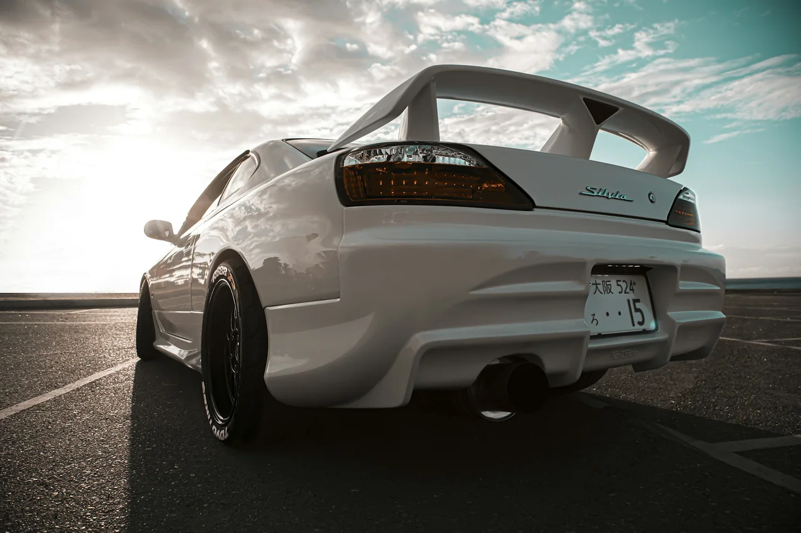
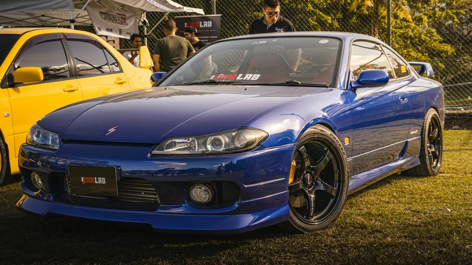
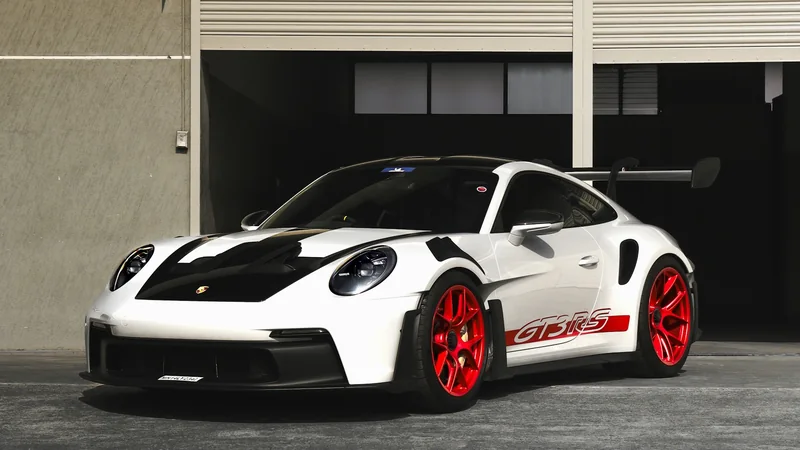

Régléaumillimètre.
Atelier châssis et freinage à Luxembourg. On mesure avant de toucher, on vous montre avant de commander.
Réserver un diagnostic→Ce que vous ressentez · ce qu'on règle
Avant.Après.
PédaleMolle, elle s'enfonceFerme et constante
VolantLa voiture tire à droiteDroit, mains légères
VirageLa caisse roulePosée
Freinage appuyéÇa vibre dans le volantNet
ÉchappementPassera-t-il le contrôle ?Vérifié avant commande
Exemples de ressentis fréquents, pas des résultats garantis : chaque voiture passe d'abord sur le pont.
Au pont
Ce qui passechez nous.



Photos d'illustration (Unsplash, licence libre). Pas des véhicules clients.
Services
Ce qu'on règle.
- 01FreinageDisques, plaquettes, étriers et liquide, de l'origine au kit grand diamètre.
- 02SuspensionAmortisseurs, combinés filetés, silentblocs. Hauteur et fermeté selon votre usage.
- 03GéométrieCarrossage, pincement, chasse, mesurés sur banc. Relevés avant et après, imprimés.
- 04ÉchappementLignes inox, silencieux, homologation vérifiée avant de commander.
- 05CircuitAvant une journée de piste : purge, plaquettes adaptées, pressions, contrôle au retour.
Déroulé
Un tour d'atelier.
Secteur 1
Sur le pont
On regarde la voiture avec vous : usure, jeux, fuites. Avant qu'on parle de prix.
Secteur 2
Devis écrit
Pièces, main-d'œuvre, délai. Rien n'est commandé sans votre accord.
Secteur 3
Essai, puis rapport
Essai routier, puis un compte rendu de ce qui a été fait, avec les relevés.
Diagnostic
On vousrappelle.
Dites-nous la voiture et ce que vous ressentez au volant. On revient vers vous avec un créneau. (formulaire de démonstration)
- Atelier
- Luxembourg (adresse fictive)
- Langues
- Français, Deutsch, English, Lëtzebuergesch